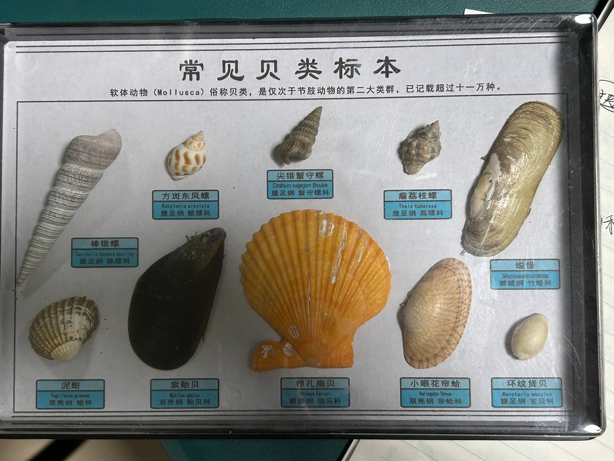

十种常见贝类的
分子数据档案库
以一套常见贝类标本为对象，整合分类谱系、线粒体 COI 条形码、基因组组装与 RefSeq 资源。 每一条序列都附 GenBank 登录号，可逐条回溯至 NCBI 原始记录。

物种速览
点击任一卡片查看完整档案：分类谱系、名称核对、COI 序列与基因组资源。
公开序列存量
各物种在 NCBI 核酸库中的 COI 记录数（对数刻度）——直接反映该物种被条形码研究的充分程度。
物种档案
10 种标本的分类与分子数据。学名已按 WoRMS 现行分类核对，标签与现行分类不一致之处逐一标注。
COI 条形码检索
全部记录来自 GenBank，可按登录号、物种、描述检索，并一键复制 / 下载 FASTA。
长度与 GC 含量分布
分类树
基于 NCBI Taxonomy 谱系构建：门 → 纲 → 目 → 科 → 种。腹足纲与双壳纲各 5 种。
阶元一览
每个物种的完整谱系，点击物种名跳转档案。
关于本站
一个只放可核验数据的贝类分子数据库——每个数字都能追到源头。
数据来源
- NCBI Nucleotide：COI 条形码序列与 GenBank 登录号
- NCBI Taxonomy：分类谱系与 TaxID
- NCBI Datasets / Assembly：基因组组装、大小、N50
- NCBI Protein：RefSeq 蛋白记录数
- WoRMS（世界海洋物种名录）：学名接受状态、科属归属
采集脚本见 tools/collect.mjs、tools/worms.mjs，数据快照为 2026-11-02，可随时重跑更新。
如何核验
任取一条序列的登录号，直接在 GenBank 检索即可对照：
- 序列页 → 点登录号 → 跳转 NCBI 原始记录
- 物种页 → TaxID / AphiaID → 跳转 NCBI 与 WoRMS
- FASTA 文件 →
data/fasta/，与页面同源
数据层是可读的 JSON：data/species.json。
标签与现行分类的差异
标本标签上的学名有 4 处已非现行接受名，本站以 WoRMS 为准并保留标签原名供对照：
技术说明
- 纯静态站点：HTML + CSS + 原生 JS，无后端、无数据库依赖
- 图表：Apache ECharts 5.4.3（本地打包，离线可用）
- 部署：推送到 GitHub Pages 即可，无密钥、无配额、不会因闲置而暂停
- 无 Cookie、无追踪、不收集访客信息
引用与免责
数据版权归 NCBI / WoRMS 及各原始发表者所有，本站仅作整理与可视化，供教学与科研参考。 序列与分类信息请以原始数据库为准；用于正式发表前请自行复核并引用原始文献。
建议引用格式：MolluscaDB (2026). 常见贝类分子数据平台, v1.0. 数据快照 2026-11-02.